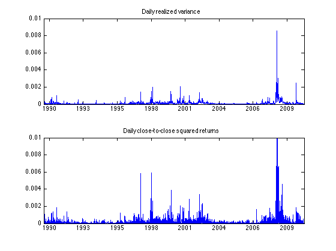
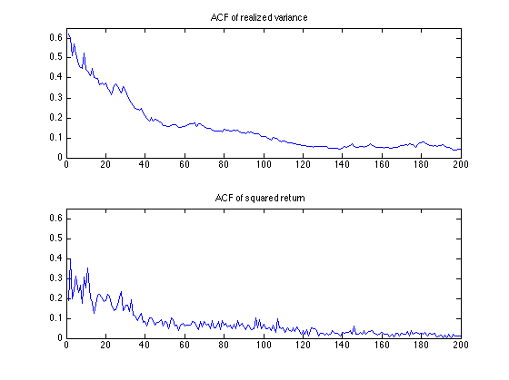
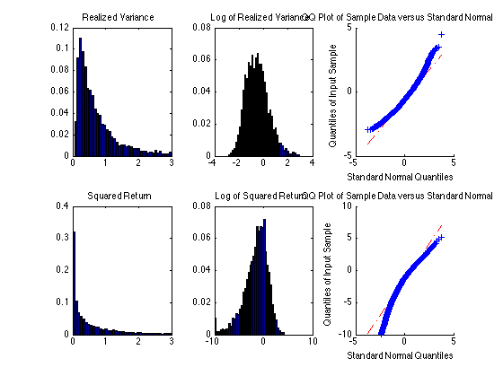
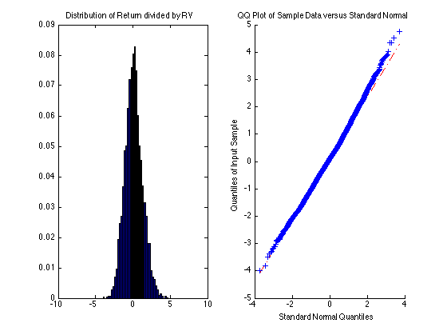

Four Realized Variance Stylized Facts
This is an illustration of four stylized facts on RV, from chapter 5 of EFRM
Contents
RV Stylized Fact 1
RVs are much more precise indicators of daily variance thanare daily squared returns.
sp500data = readtable('RV_DATA.xlsx'); sp500ret = table2array(sp500data(:,2)); sp500rv = table2array(sp500data(:,3)); x_yr = x2mdate(sp500data.date); figure(1) subplot(2,1,1) plot(x_yr,sp500rv/10000) title('Daily realized variance') datetick('x','keepticks','keeplimits') xlim([x_yr(1) x_yr(end)]) ylim([0 0.01]) subplot(2,1,2) plot(x_yr,sp500ret.^2/10000) title('Daily close-to-close squared returns') datetick('x','keepticks','keeplimits') xlim([x_yr(1) x_yr(end)]) ylim([0 0.01])
RV Stylized Fact 2
RV has large positive autocorrelations for many lags
acf_rv = autocorr(sp500rv,200); acf_sr = autocorr(sp500ret.^2,200); figure(2) subplot(2,1,1) plot(1:200,acf_rv(2:end)) ylim([0 0.65]) title('ACF of realized variance') subplot(2,1,2) plot(1:200,acf_sr(2:end)) ylim([0 0.65]) title('ACF of squared return')
RV Stylized Fact 3
The log of RV is approximately normally distributed
figure(3) subplot(2,3,1) [c,x_hist] = hist(sp500rv(sp500rv<=3),40,'Normalization','probability'); bar(x_hist,c/sum(c)); xlim([0 3]) title('Realized Variance') subplot(2,3,2) [c,x_hist] = hist(log(sp500rv(sp500rv<=20)),40,'Normalization','probability'); bar(x_hist,c/sum(c)); xlim([-4 4]) title('Log of Realized Variance') subplot(2,3,3) qqplot(log(sp500rv)) subplot(2,3,4) [c,x_hist] = hist(sp500ret(abs(sp500ret)<sqrt(3)).^2,40,'Normalization','probability'); bar(x_hist,c/sum(c)); xlim([0 3]) title('Squared Return') subplot(2,3,5) [c,x_hist] = hist(log(sp500ret(abs(sp500ret)<=10).^2),40,'Normalization','probability'); bar(x_hist,c/sum(c)); title('Log of Squared Return') subplot(2,3,6) qqplot(log(sp500ret.^2))
RV Stylized Fact 4
The daily return divided by the square root of RV is close to i.i.d. standard normal
figure(4) subplot(1,2,1) [c,x_hist] = hist(sp500ret./sqrt(sp500rv),40,'Normalization','probability'); bar(x_hist,c/sum(c)); title('Distribution of Return divided by RV') xlim([-10 10]) subplot(1,2,2) qqplot(sp500ret./sqrt(sp500rv))